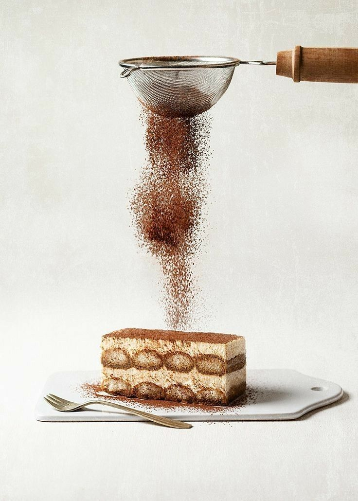
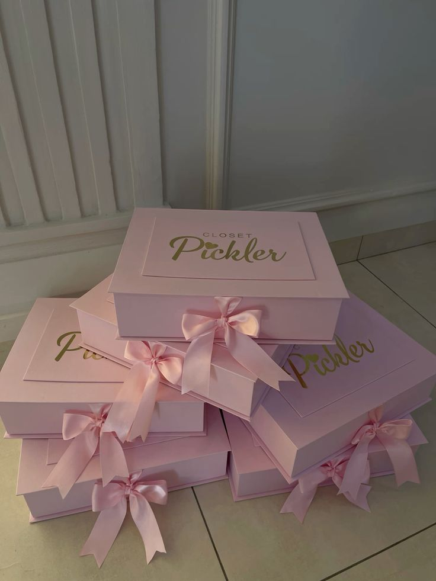

We made that vision a reality with Sweetment, where we help make commemorating your life’s sweetest moments an easier, more meaningful experience. We integrated our passion for heart-felt presents, flowers and sweets to create a marketplace that would have everything one could need for any occasion — all just around the corner.Sweetment is designed to save time, and relieve stress; bring joy to both the givers and the receivers. If you’re celebrating a birthday, anniversary or simply saying thank you, we make it easy to send the perfect gift. It started out as a little idea – we wanted to help people celebrate without all the stress of having to visit loads of different stores. So we developed ano-brainer of a website full of reliable suppliers, lovely gifts and speedy shipping. At Sweetment we feel that there’s no such thing as too much sweet. We’re here to make gift giving thoughtful and memorable – one sweet moment at a time.
he other hurdle is finding a store that meets our concept and wants to come on board. Once we completed the designing and the coding, during our experiments of testing, even we encountered some technical glitches and thus planned a few more tests until the website worked out.smoothly. It was also difficult to find time when everyone on the team was free, because all were busy with other projects and examinations.The final point, and maybe the most exhausting one, was that after every meeting we had, there was a constant stream of new ideas — which led us to cut and tweak things that were already done.
From the Sweetment project, we learned many critical technical and organizational skills that improved our teamwork and design capabilities. We created a responsive site structure during the design phase of our website to give an intuitive and easy user experience with clean simple interface while maintaining an organized layout that works great on other devices.We also learned to be organized with your time and organizing work as a team, pressure, dead lines. We also grew in our technical skills with HTML, CSS and Javascript and learned more about UI/UX design. This allowed us to see how we could balance the technical and user side of experience.
One of the funniest moments in our Sweetment project was when we spent many hours to find a name that would really fit our idea. And after each stage was completed we treated ourselves to sweets, come on with a name like Sweetment, how could we not?! 🍰 The way we transformed a small inconvenience into something meaningful and beautiful makes us proud. Well, seeing our idea become a reality and make others celebrations easier and happier is what truly makes us proud of Sweetment.
This project was developed by three team members, each bringing unique strengths to Sweetment. Malak created and designed the Flowers page, ensuring it reflects the gentle and elegant softness that defines Sweetment’s memorable moments. Noor developed the Chocolate and Cakes page, crafting a warm, inviting experience that complements the sweet essence of our project. Amna worked on the Gifts page, adding thoughtful details that highlight the beauty and meaning behind every special present. The remaining parts of the website — including the framework, navigation, design decisions, testing, and content — were completed collaboratively as a team, where every idea, contribution, and discussion shaped Sweetment into what it is today.
Finally, Sweetment we realized that cooperation and hard work will make a small idea become real and useful. The journey was hard, but it trained us to work together, handle our time and think creatively to solve problems. We thank our doctor guidance and encouragement,which let us to enrich our project. We’re proud of creating something that brings joy to people in their sweetest moments.
We used several external resources during the development of Sweetment to help us understand JavaScript validation, regular expressions, and best practices for form handling. These references supported us in building a smoother and more functional user experience.

